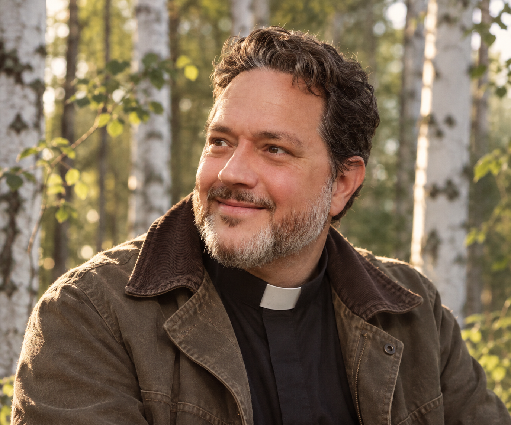

Blessings
Homes, boats, pets, gardens, new beginnings and the ordinary things that carry meaning.
Modern ritual • ancient belonging
Ministry of Birchwood exists to help people reconnect with the living world, with one another, and with the quieter parts of themselves through ritual, reflection, creativity and reverence for the ordinary mysteries of life.
About the ministry
Ministry of Birchwood is a non-denominational, independent ministry rooted in respect for nature, humanity, creativity and the quiet mysteries of life.
We hold space for the moments that matter: beginnings, endings, transitions and everything in between, through meaningful, inclusive and personal ritual.
Our approach is grounded, compassionate and open to all, regardless of belief system.
People • Place • Ritual • The Living World
Our principles
Our offerings
Homes, boats, pets, gardens, new beginnings and the ordinary things that carry meaning.
Naming ceremonies, vow renewals, handfastings, commitment rituals and threshold moments.
Funerals, celebrations of life and personal tributes that honour both beauty and messiness.
Marking change with intention, dignity and language that actually feels like it means something.
Nature-based reflections and community ritual around the turning year, light and darkness.
Custom ceremonies tailored to your story, your people and whatever strange human threshold you are crossing.

Meet the minister
Ordained Minister, Universal Life Church
Founder, Ministry of Birchwood
Rev. Nicholas Birch is an ordained minister of the Universal Life Church and the founder of the Ministry of Birchwood. His approach draws on nature, creativity, ritual and a lifelong fascination with the old symbolic traditions humans have used to make sense of change, loss, belonging and wonder.
Birchwood is grounded rather than dogmatic, personal rather than prescribed, and shaped around the people, places and stories involved. It welcomes those of any faith or none at all.
“Ritual is a way of saying
this moment matters.”
Get in touch
If you’d like to discuss a ceremony, blessing, memorial or bespoke ritual, send a note below.
Your email address is used only so Reverend Birch can reply to your enquiry.
Ministry of Birchwood is a non-denominational ministry. In Australia, legal marriages must be solemnised by an authorised marriage celebrant. Ministry of Birchwood does not currently provide statutory marriage solemnisation.